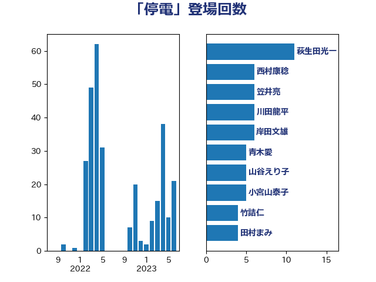

単語「停電」

| 萩生田光一 | 自由民主党 | 12 回 |
| 梶山弘志 | 自由民主党 | 11 回 |
| 山岡達丸 | 立憲民主党 | 8 回 |
| 浜口誠 | 国民民主党 | 8 回 |
| 笠井亮 | 日本共産党 | 8 回 |
| 枝野幸男 | 立憲民主党 | 7 回 |
| 柿沢未途 | 無所属 | 7 回 |
| 足立敏之 | 自由民主党 | 7 回 |
| 阿部知子 | 立憲民主党 | 7 回 |
| 青木愛 | 立憲民主党 | 6 回 |
| 小林鷹之 | 自由民主党 | 5 回 |
| 小泉進次郎 | 自由民主党 | 5 回 |
| 山谷えり子 | 自由民主党 | 5 回 |
| 岸田文雄 | 自由民主党 | 5 回 |
| 川田龍平 | 立憲民主党 | 5 回 |
| 大島敦 | 立憲民主党 | 4 回 |
| 平木大作 | 公明党 | 4 回 |
| 音喜多駿 | 日本維新の会 | 4 回 |
| 下野六太 | 公明党 | 3 回 |
| 寺田静 | 無所属 | 3 回 |
| 小宮山泰子 | 立憲民主党 | 3 回 |
| 岡本あき子 | 立憲民主党 | 3 回 |
| 後藤茂之 | 自由民主党 | 3 回 |
| 浜野喜史 | 国民民主党 | 3 回 |
| 西銘恒三郎 | 自由民主党 | 3 回 |
| 中島克仁 | 立憲民主党 | 2 回 |
| 住吉寛紀 | 日本維新の会 | 2 回 |
| 吉田統彦 | 立憲民主党 | 2 回 |
| 森屋隆 | 立憲民主党 | 2 回 |
| 河野太郎 | 自由民主党 | 2 回 |
| 浜田聡 | NHK党 | 2 回 |
| 海江田万里 | 立憲民主党 | 2 回 |
| 田村まみ | 国民民主党 | 2 回 |
| 自見はなこ | 自由民主党 | 2 回 |
| 角田秀穂 | 公明党 | 2 回 |
| 赤羽一嘉 | 公明党 | 2 回 |
| 金子恭之 | 自由民主党 | 2 回 |
| 鈴木淳司 | 自由民主党 | 2 回 |
| 長浜博行 | 無所属 | 2 回 |
| 世耕弘成 | 自由民主党 | 1 回 |
| 中野洋昌 | 公明党 | 1 回 |
| 中野英幸 | 自由民主党 | 1 回 |
| 井上英孝 | 日本維新の会 | 1 回 |
| 北村経夫 | 自由民主党 | 1 回 |
| 国光あやの | 自由民主党 | 1 回 |
| 城井崇 | 立憲民主党 | 1 回 |
| 塩村あやか | 立憲民主党 | 1 回 |
| 大家敏志 | 自由民主党 | 1 回 |
| 大西英男 | 自由民主党 | 1 回 |
| 大野敬太郎 | 自由民主党 | 1 回 |
| 宮口治子 | 立憲民主党 | 1 回 |
| 小西洋之 | 立憲民主党 | 1 回 |
| 山口那津男 | 公明党 | 1 回 |
| 岡本三成 | 公明党 | 1 回 |
| 岸真紀子 | 立憲民主党 | 1 回 |
| 平井卓也 | 自由民主党 | 1 回 |
| 平将明 | 自由民主党 | 1 回 |
| 平山佐知子 | 無所属 | 1 回 |
| 平林晃 | 公明党 | 1 回 |
| 徳永エリ | 立憲民主党 | 1 回 |
| 打越さく良 | 立憲民主党 | 1 回 |
| 斎藤アレックス | 国民民主党 | 1 回 |
| 日下正喜 | 公明党 | 1 回 |
| 杉久武 | 公明党 | 1 回 |
| 杉田水脈 | 自由民主党 | 1 回 |
| 村井英樹 | 自由民主党 | 1 回 |
| 榛葉賀津也 | 国民民主党 | 1 回 |
| 比嘉奈津美 | 自由民主党 | 1 回 |
| 江島潔 | 自由民主党 | 1 回 |
| 浅田均 | 日本維新の会 | 1 回 |
| 清水真人 | 自由民主党 | 1 回 |
| 清水貴之 | 日本維新の会 | 1 回 |
| 滝波宏文 | 自由民主党 | 1 回 |
| 片山さつき | 自由民主党 | 1 回 |
| 田村憲久 | 自由民主党 | 1 回 |
| 石井章 | 日本維新の会 | 1 回 |
| 石垣のりこ | 立憲民主党 | 1 回 |
| 石川大我 | 立憲民主党 | 1 回 |
| 竹谷とし子 | 公明党 | 1 回 |
| 細田健一 | 自由民主党 | 1 回 |
| 美延映夫 | 日本維新の会 | 1 回 |
| 荒井優 | 立憲民主党 | 1 回 |
| 菅直人 | 立憲民主党 | 1 回 |
| 落合貴之 | 立憲民主党 | 1 回 |
| 藤巻健太 | 日本維新の会 | 1 回 |
| 豊田俊郎 | 自由民主党 | 1 回 |
| 野田聖子 | 自由民主党 | 1 回 |
| 青山繁晴 | 自由民主党 | 1 回 |
| 須藤元気 | 無所属 | 1 回 |
| 馬場雄基 | 立憲民主党 | 1 回 |
| 高橋はるみ | 自由民主党 | 1 回 |
| 鬼木誠 | 立憲民主党 | 1 回 |